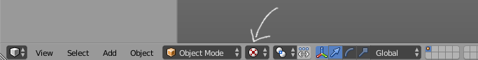
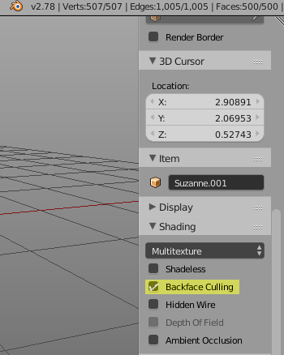
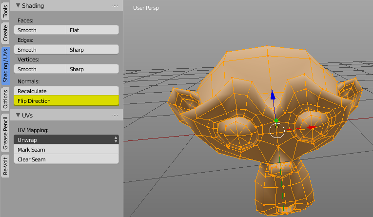
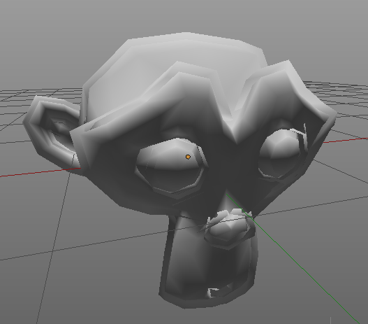

Special Effects
If you want to give your track (or even car) a special look, you can try out one of these things:
Cartoon Style
Cartoons often have outlines around characters and objects. In modern games, this could be achieved with a shader. However, Re-Volt doesn't support such fancy technology. There is a way to get your cartoon fixings despite the games ancient technology.
Please excuse the different Blender theme I'm using, it's much easier to see things with a brighter background! Marv
Alright, first off, here's what we're aiming for:
Before we get started, you might want to set your view port to Texture Mode in order to see vertex colors:

So, you're a bit bored by the appearance of your object, right? Perhaps you're a bit lazy to work out the textures and all you have right now is a shaded monkey.
One thing to note is that results with more complex models may vary, perhaps even require manual cleanup. In this case, it works out alright if you're not a perfectionist (which I know you are!).
To even see what's going on, we need to adjust a setting in the 3D view. Do you remember the panel on the right? You can toggle it by pressing N. Press it a few times to see which panel I'm talking about.
Now scroll down a bit and make sure Backface Culling is enabled.

The first step is to duplicate your object. I'm going to demonstrate this in Object Mode since it's easier to work with.
To duplicate the object, I press SHIFT D. You will then have another instance of the object stuck to your cursor. We don't want to move it anywhere else, so hit ESC or RMB.
If you look at your outliner in the top right, you'll see two of your objects:
Now let's change into Edit Mode. Make sure everything is selected by pressing A. The first thing we'll do is to flip the normals. To do that, either hit SPACE and type Flip Normals or click this button:

You won't see any difference just yet.
Now let's get to the juicy part. Make sure everything is still selected! Press ALT S (this tool is called Shrink Flatten) and move your mouse around. If you're unsure, enter something like -0.1 on the keyboard and press ENTER or LMB. You will already see that something like an outline will form:

Now it is time to assign a color to the outline. Head on over to the Re-Volt tool tab and locate the Vertex Color Panel. You might be prompted to create a vertex color layer. Do so.
When your object has a vertex color layer, you will see the buttons for setting colors. Either pick a color or a shade and press a button (I chose black because I'm boring). You will then see that the outline changes its color:
Enter Object mode again and bewonder your final result. Perhaps go back and change the color or use ALT S again to change the thickness. Yes, I know, there are some rough edges but you have to understand that the game is from 1999, alright?
Now, feel free to merge the two objects by selecting them and pressing CTRL J. You have to do this for exporting cars (.prm), but not when you're working on a track (.w).